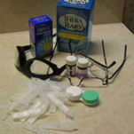
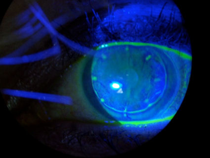
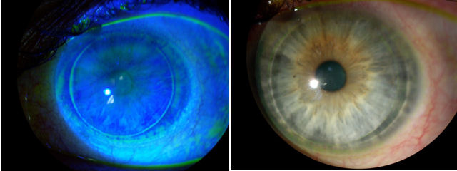

LASIK Risks, Complications, Side Effects, Problems

Prospective LASIK patients place their trust in LASIK surgeons to disclose risks and potential problems of the surgery. LASIK surgeons behave more like used car salesmen than physicians, talking up the 'supposed' benefits of LASIK while downplaying or concealing complications.
FDA clinical trials demonstrate alarming numbers of patients experience complications such as dry eyes and night vision problems after LASIK. A published review of data from twelve FDA clinical trials for LASIK, including newer 'custom' 'wavefront' technology, reveals that six months after LASIK, 17.5% of patients report halos, 19.7% report glare (starbursts), 19.3% have night-driving problems and 21% complain of eye dryness. Source: Bailey MD, Zadnik K. Outcomes of LASIK for myopia with FDA-approved lasers. Cornea 2007 Apr;26(3):246-54.
IMPORTANT NOTICE: Due to the failure of LASIK surgeons to report LASIK complications as required by federal law, patients who experience dry eyes, night vision problems, or other complications after LASIK should file a MedWatch report online with the FDA. Alternatively, you may call FDA at 1-800-FDA-1088 to report by telephone, download the paper form and either fax it to 1-800-FDA-0178 or mail it using the postage-paid addressed form, or download the MedWatcher Mobile App for reporting LASIK problems to the FDA using a smart phone or tablet. Read a sample of LASIK injury reports currently on file with the FDA.
If you are experiencing problems from LASIK or another form of refractive eye surgery, we invite you to join the discussion on FaceBook
A few of the possible complications of LASIK surgery are listed on the left menu bar. LASIK surgeons quote complication rates of 1% or less, but what defines a "complication"?
LASIK surgeons don't consider dry eyes and night vision problems as "complications", even though they may be debilitating and permanent. Furthermore, no one is tracking long-term consequences and late-onset complications. LASIK surgeons are well aware that problems such as intractable dry eyes and night vision problems after LASIK are common...
Villa et al: "Patients undergoing LASIK procedures display an increase of halo phenomena around lights in night vision conditions, even when the results of the surgery are considered entirely satisfactory according to current international standards of predictability, efficacy and safety." Source: Br J Ophthalmol. 2007 Aug;91(8):1031-7.
Bailey MD, Zadnik K.: "Night vision and dryness symptoms still occur in a significant proportion of patients."
Source: Cornea 2007 Apr;26(3):246-54. Outcomes of LASIK for myopia with FDA-approved lasers
Marguerite McDonald, MD: "With LASIK, roughly half of my patients had dry eye complaints after surgery - and in about half of these, the symptoms were severe."
Source: www.RefractiveEyecare.com, December 2005
Sugar et al: "Serious adverse complications leading to significant permanent visual loss such as infections and corneal ectasia probably occur rarely in LASIK procedures; however, side effects such as dry eyes, night time starbursts, and reduced contrast sensitivity occur relatively frequently." Source: Ophthalmology. 2002 Jan;109(1):175-87.
Typical 20/20 vision after LASIK
Photos courtesy of Dr. Edward Boshnick. See www.lasikhope.com
The image directly below shows the eye of a patient who developed ectasia after RK and LASIK. The patient is wearing a large (scleral) therapeutic rigid contact lens, which covers the entire cornea. You can see the edge of the lens on the white of the eye. Of note is the abnormal blood vessel growth into the cornea. This sight-threatening condition is known as corneal neovascularization. This case also demonstrates the domino effect of unnecessary eye surgery. Click on the photograph to enlarge.
The image below is a post-LASIK eye with neovascularization wearing a scleral lens. The blood vessel growth is very pronounced at the 6:00 position on the cornea.
The eye below has undergone LASIK and PRK and conductive keratoplasty (CK). This is another case which illustrates the domino effect of unnecessary eye surgery -- LASIK surgeons seem to think that more surgery can fix problems created by previous surgeries, but many times it just makes matters worse. The pattern of small scars around the periphery of the cornea (resembling a clock) are scars from CK surgery. The ring just outside the CK scars is the LASIK flap scar.

Medical studies have found that the cornea is incapable of complete healing after LASIK (learn more). But a picture is worth a thousand words. The two photos below are of the same cornea. In the photo on the left, the cornea was illuminated with a blue light after placing a dye into the eye. The dye has settled into the margin of the LASIK flap. In the photo on the right, you can see the flap margin without dye under normal light. The permanent LASIK flap places patients at risk of future eye problems.

This next image is a photograph of a herpes keratitis lesion following LASIK surgery. This condition may lead to permanent scarring and blindness. History of herpes keratitis is a contraindication for LASIK surgery, as surgical trauma may trigger reactivation. Note: The faint ring around the cornea in this photo is the margin of the LASIK flap.
/post-lasik-herpes-keratitis.jpg)
YouTube: LASIK Flap Disintegrates Upon Lifting for Enhancement
What about PRK?
Note from the Editor: Frequently I get emails from people who want to know if PRK is safer than LASIK. I am not a doctor, so I can only offer my personal opinion.
PRK carries many of the same risks as LASIK except for flap complications. Many surgeons now use a chemotherapy drug called mitomycin-C (MMC) when performing PRK to prevent haze. MMC leads to cell death. MMC has been reported to have long-term adverse effects. Here's a link to a collection of research articles on MMC. Click here
Moreover, some ophthalmologists speculate that permanent destruction of the Bowman's membrane during PRK may lead to late-onset complications. Bowman's membrane is a protective barrier between the environment and the corneal stroma.
I have interacted with countless PRK patients who had a poor outcome. Haze, dry eyes, and night vision problems are the most common complaints after PRK. Regression is also common after PRK.
Bottom line, I am opposed to all forms of unnecessary eye surgery. Keep your glasses!
Other helpful information
A 2009 Consumer Reports Health survey finds 53% of laser eye surgery patients experience at least one side effect and 22% still have problems six months after surgery. Read article
Behind the scenes, leading surgeons are voicing serious concerns about LASIK and some have already abandoned the procedure completely... Read more.
One hundred twenty six concerned citizens ask the FDA to issue a public health advisory regarding the high incidence of adverse events and long-term consequences associated with LASIK surgery. LASIK Advisory
Serious complications such as delayed ectasia occuring years after LASIK have caused many in the industry to question the safety of the procedure. Read medical studies that reveal problems inherent to LASIK surgery: Medical Studies
Researchers report that LASIK eyes have a 48% reduction in corneal biomechanical strength. Read article
If you want to do your own LASIK research, a good place to start is on the government site, PubMed. Just remember, sometimes you must read between the lines or obtain the full-text of an article. Conclusions written by biased LASIK surgeons can be misleading and self-serving. Do not rely on information found on Internet sites owned, operated or supported by LASIK surgeons, or sites that refer patients to LASIK surgeons.
Accident rates for pilots with refractive surgery higher than non-refractive pilots
Nakagawara, V.B., Montgomery, R.W., and Wood, K.J. The Aviation Accident Experience of Civilian Airmen With Refractive Surgery. June 2002. Sponsored by Federal Aviation Administration and U.S. Department of Transportation
Excerpts: The accident rates for airmen with refractive surgery were higher than those of non-refractive surgery airmen within each class of medical certification and as a total group...The report narratives revealed only three references to visual difficulties. One report described the aircraft striking an unattended baggage cart while taxiing at night on a poorly-lit parking ramp. A second accident was a midair collision in which both pilots reportedly failed to “see-and-avoid” one another. (Note: The other pilot involved in this accident did not have refractive surgery.) The third accident occurred as the pilot attempted to land on a section of beach that he thought was wet sand, which was actually a 6 to 8-inch deep pool of water... If concerns regarding laser refractive procedures prove prophetic, it can have a severe impact on the visual performance of pilots and aviation safety in the future... Subjective complaints following refractive surgery include reduced contrast sensitivity, increased glare sensitivity, and the loss of best-corrected visual acuity. Some patients, who report seeing well in normal room lighting conditions, have found night driving to be difficult or impossible due to aberrations (i.e., halos, starbursts, and ghost images) from street lights, traffic lights, and oncoming headlights.
Disclaimer: The information contained on this web site is presented for the purpose of warning people about LASIK complications prior to surgery. LASIK patients experiencing problems should seek the advice of a physician.